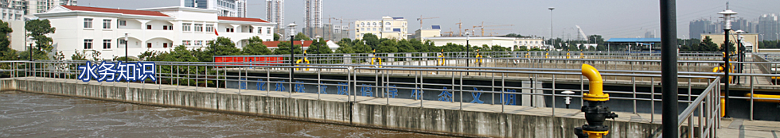

联系我们
加入收藏
设为首页
首页
关于水务
水务新闻
集团相关
人才招聘
行业知识

水务新闻
新闻资讯
行业动态
工艺展示
人才招聘
联系我们
新闻中心
2014-11-25
污水泵使用寿命和注意事项你知道吗？
2013-07-08
环境污染治理设施运营资质分类分级标准（第1版）
2013-07-08
环境污染治理设施运营资质许可管理办法
2013-06-19
《污水排入城镇下水道水质标准》CJ343-2010
2013-06-19
GB 18918-2002 城镇污水处理厂污染物排放标准
2013-06-19
长沙市环境保护局关于印发《长沙市境内河流生态补偿实施细则（试行）》的通...
2013-06-19
中华人民共和国水污染防治法
2013-06-19
水利工程常用术语
2013-06-19
长沙市水资源管理条例
首页
<
1
2
3
...
>
末页